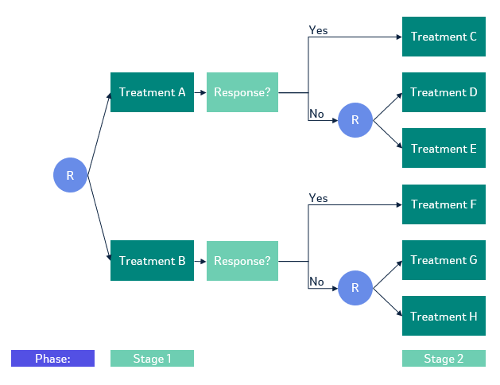

Full demo of IAIPWE
Computing values using the interim augmented inverse probability weighted estimator
Cole Manschot
Source:vignettes/iaipwe.Rmd
iaipwe.RmdIntroduction
The interim augmented inverse probability weighted estimator (IAIPWE)
is a method for estimating the value of a regime in a sequential
multiple assignment randomized trials (SMARTs). It provides a way to
estimate the value of a treatment regime by combining data from multiple
stages of treatment assignment. This vignette demonstrates how to
compute values using the IAIPW estimator with the rsmart
package in R. We also show how the package can be used to compute the
values of a regime at a final or single analysis and how to compute the
value of a regime using the inverse probability weighted estimator
(IPWE). Our package implements the value estimator proposed by Manschot et al. (2023), which subsumes the
estimator of Wu et al. (2023).
An example SMART
A SMART randomized participants at each key decision point. The treatments available to a participant at each decision point may be based on their previous treatments or history. We consider a common two-stage SMART where participants are randomized to one of two treatments at the first stage. At the second stage, non-responders are randomized to one of two treatments based on their response to the first treatment and responders receive their second-stage treatment deterministically. This allows us to demonstrate the feasible sets framework in the implementation.

SMART where only non-responders are re-randomized
We are interested in estimating the value or mean expected outcome of the embedded regimes in the SMART. A regime is a set of rules that assigns treatments to participants at each key decision point. The above SMART has four embedded regimes, which are sets of rules that are built into the trial design. They each follow the same rule structure, give intervention 1, if response give intervention 2, if non-response give intervention 3. If we use a canonical approach to enumerating the embedded regimes, the first embedded regime is give Treatment A, if response, give Intervention C, if non-response give Intervention D.
The sample data
We assume that the outcome y is a continuous variable
encoded so that higher values are better. The treatment assignments are
coded as a1 and a2 for the first and second
stages, respectively.
We observe two baseline covariates, \(x_{11}\) and \(x_{12}\), at the first stage and two
additional covariates, \(x_{21}\) at
the second stage. A response status r2 is observed prior to
the second stage treatment assignment.
We use gen_no_trt_resp to generate our sample data from
the two-stage SMART. The function regime_list_no_trt_resp
will return a list of lists. The first level of the list corresponds to
the embedded regimes we are interested in estimating. The second level
of the list corresponds to the treatment assignments an individual would
have received if they followed that regime and whether that individual
received treatments consistent with that regime at each stage.
# This code block is used to generate the dataset used in the vignette.
set.seed(1)
dat <- gen_no_trt_resp(n=300, s2=200, block_rep=2, r2p = 0.5)
regimes <- regime_list_no_trt_resp(emb_regimes = list(c(0,0), c(0,1), c(1,0), c(1,1)),
dat = dat,
resp_trt = list("r2" = list(0, 0, 0, 0)))Computing the IPWE
We begin with the IPWE and build to the IAIPWE as the complexity of the esimation increases with the addition of augmentation terms and interim analyses.
Currently, there is no option to use known randomization probabilities for the estimation procedure. This is omitted as the IPWE is known to be statistically more efficient when the randomization probabilities are estimated from the data (Tsiatis (2006)).
We can use the following models to model the treatment assignment probabilities at stage 1 and stage 2.
p1 <- modelObj::buildModelObj(model = ~ 1,
solver.method = 'glm',
solver.args = list(family='binomial'),
predict.method = 'predict.glm',
predict.args = list(type='response'))
p2 <- modelObj::buildModelObj(model = ~ I(a1==0):I(r2==0) -1,
solver.method = 'glm',
solver.args = list(family='binomial'),
predict.method = 'predict.glm',
predict.args = list(type='response'))
pi_list <- list(p1,
p2)The stage 1 model uses an intercept-only model to estimate the probability of \(A_1=1\). The stage 2 model uses the interaction between the initial treatment and response status to estimate the probability of \(A_2=1\) based on initial treatment and response status. This stage 2 model can be used for SMARTs that re-randomize both responders and non-responders as well.
We also need to generate the proposed treatments and consistency indicators for the four regimes of interest. We encode the embedded regimes separately for responder treatments and non-responder treatments. This leads to encoding treatments A, C, D, F, and H as \(0\) and treatments B, E, and H as \(1\).
regime_all <- regime_list_no_trt_resp(emb_regimes = list(c(0,0), c(0,1), c(1,0), c(1,1)),
dat,
resp_trt=list("r2" = list(0, 0, 0, 0)))To calculate the values using the IPWE, we specify
q_list = NULL to indicate that no augmentation terms will
be used for computation. We also set t_s = max(dat$t3) to
indicate that we want to compute the values at the ‘’final analysis’’
time point.
ipweres <- iaipwe(df=dat,
pi_list=pi_list,
q_list=NULL,
regime_all=regime_all,
feasible_sets_indicator=TRUE,
t_s=max(dat$t3)) Then we can extract the values from the results along with calculating the standard errors and confidence intervals.
ipweres$values
#> [1] 44.66141 46.01309 41.67384 49.97059
ipweres$se
#> [1] 1.513233 1.641932 1.747438 1.658016If you wanted to construct a test to determine if any two regimes are
different, you can use the covariance matrix \(V_n\) returned by the iaipwe
function. The covariance returned by the function is the covariance of
all estimated parameters following Manschot et
al. (2023), so it must first be subset to just those of the value
estimates.
cont.mat <- matrix(data = c(1, 0, 0, -1,
0, 1, 0, -1,
0, 0, 1, -1),
nrow = 3, byrow=TRUE)
endi <- dim(ipweres$covariance)[2]
starti <- endi - length(ipweres$values) + 1
covvhat <- ipweres$covariance[starti:endi, starti:endi] / ipweres$nus$ns
chisq <- t(cont.mat %*% ipweres$values) %*%
(solve(cont.mat %*% covvhat %*% t(cont.mat))) %*%
(cont.mat %*% ipweres$values)
pchi <- 1-pchisq(q = chisq, df = 3)The observed \(\chi^2\) statistic is 4979.511 and the p-value is 0.
The confidence intervals for the value of each regime can also be constructed using the standard errors.
alpha <- 0.05
ci <- data.frame(
regime = seq(1, 4),
value = round(ipweres$values, 3),
lower = round(ipweres$values - qnorm(1-alpha/2) * ipweres$se, 3),
upper = round(ipweres$values + qnorm(1-alpha/2) * ipweres$se, 3)
)
ci
#> regime value lower upper
#> 1 1 44.661 41.696 47.627
#> 2 2 46.013 42.795 49.231
#> 3 3 41.674 38.249 45.099
#> 4 4 49.971 46.721 53.220Computing the AIPWE
To compute the AIPWE, we need to propose Q-functions for stage 1 and
stage 2. When these models are correctly specified or the observed
covariates are correlated with the outcome, the augmentation terms help
increase the statistical efficiency of the estimator. This comes at the
trade off of a slight increase in computation time. These models can be
specified using the modelObj package.
The Q-function at each stage should only use information available prior and at that stage. For example, the Q-function at stage 1 should not use the response status which is observed at stage 2.
q2 <- modelObj::buildModelObj(model = ~ x11 + x12 + x21 +
a1 + a2 + a1:a2 + r2,
solver.method = 'lm',
predict.method = 'predict.lm')
q1 <- modelObj::buildModelObj(model = ~ x11 + x12 +
a1,
solver.method = 'lm',
predict.method = 'predict.lm')
q_list <- list(q1, q2)We then replace the previous NULL argument for
q_list with our updated list and re-run our analyses.
aipweres <- iaipwe(df=dat,
pi_list=pi_list,
q_list=q_list,
regime_all=regime_all,
feasible_sets_indicator=TRUE,
t_s=max(dat$t3)) Then we can extract the values from the results along with calculating the standard errors and confidence intervals.
aipweres$values
#> [1] 44.29759 45.65893 42.66392 49.69873
aipweres$se
#> [1] 1.358906 1.516436 1.615646 1.512553We can see that the AIPWE is more efficient than the IPWE as the standard errors are smaller.
We re-compute the \(\chi^2\) test-statistic and corresponding p-value.
endi <- dim(aipweres$covariance)[2]
starti <- endi - length(aipweres$values) + 1
covvhat <- aipweres$covariance[starti:endi, starti:endi] / aipweres$nus$ns
chisq <- t(cont.mat %*% aipweres$values) %*%
(solve(cont.mat %*% covvhat %*% t(cont.mat))) %*%
(cont.mat %*% aipweres$values)
pchi <- 1-pchisq(q = chisq, df = 3)The observed \(\chi^2\) statistic is 4979.092 and the p-value is 0.
With the increase precision, the observed chi-squared test statistic is larger and the p-value smaller than the results from the IPWE.
The confidence intervals for the values of each of the regimes are accordingly more narrow with this efficiency gain.
ci <- data.frame(
regime = seq(1, 4),
value = round(aipweres$values, 3),
lower = round(aipweres$values - qnorm(1-alpha/2) * aipweres$se, 3),
upper = round(aipweres$values + qnorm(1-alpha/2) * aipweres$se, 3)
)
ci
#> regime value lower upper
#> 1 1 44.298 41.634 46.961
#> 2 2 45.659 42.687 48.631
#> 3 3 42.664 39.497 45.831
#> 4 4 49.699 46.734 52.663Computing the IAIPWE
To compute the IAIPWE, we need to specify the time point at which we want to compute the values. We will use when approximately half of the participants have had their final outcome observed.
iaipweres <- iaipwe(df=dat,
pi_list=pi_list,
q_list=q_list,
regime_all=regime_all,
feasible_sets_indicator=TRUE,
t_s=median(dat$t3))Again, we extract the values, standard errors, test statistic, and confidence intervals.
iaipweres$values
#> [1] 42.77688 44.57716 40.78694 50.23526
iaipweres$se
#> [1] 1.896355 1.928573 2.449378 2.108441
endi <- dim(iaipweres$covariance)[2]
starti <- endi - length(iaipweres$values) + 1
covvhat <- iaipweres$covariance[starti:endi, starti:endi] / iaipweres$nus$ns
chisq <- t(cont.mat %*% iaipweres$values) %*%
(solve(cont.mat %*% covvhat %*% t(cont.mat))) %*%
(cont.mat %*% iaipweres$values)
pchi <- 1-pchisq(q = chisq, df = 3)
ci <- data.frame(
regime = seq(1, 4),
value = round(iaipweres$values, 3),
lower = round(iaipweres$values - qnorm(1-alpha/2) * iaipweres$se, 3),
upper = round(iaipweres$values + qnorm(1-alpha/2) * iaipweres$se, 3)
)
ci
#> regime value lower upper
#> 1 1 42.777 39.060 46.494
#> 2 2 44.577 40.797 48.357
#> 3 3 40.787 35.986 45.588
#> 4 4 50.235 46.103 54.368Because this analysis is performed using only part of the total information available, we see that the standard errors are larger than those of the AIPWE. However, the analysis is performed at time 725 instead of at time 1299, which is the final analysis time point. As such, it only uses 210 participants, which is less than the planned 300 total participants.
When testing for a difference between the embedded regimes, the observed \(\chi^2\) statistic is 2543.199 and the p-value is 0.